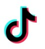
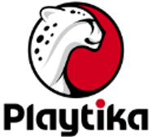
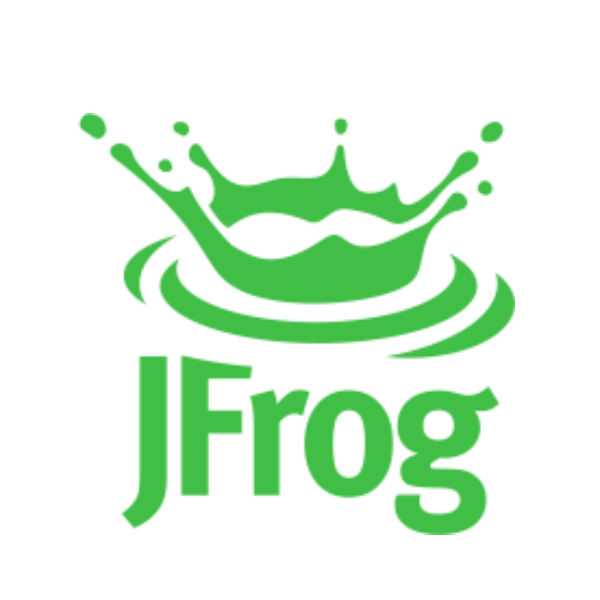

Every great place
begins with an idea.
Not just a place
to eat.
Every day, thousands of people walk into the spaces we create. Some arrive rushing between meetings. Others are celebrating a win, catching up with a colleague, or simply taking a well-earned break.
How they feel when they leave—that's what we create.
What started as a restaurant in 1988 has grown into a global hospitality company operating across Israel, Poland, Ukraine, Croatia, Spain, Germany, France, Romania, and the United States.
Different cultures.
One uncompromising standard.
Creating the
Experience.
Our restaurants are designed for people who return every day. That means every experience has to feel fresh, thoughtful, and worth coming back for. Every workplace is different, so every hospitality solution is tailored to the people, culture, and rhythm of that company.
A restaurant has one chance to impress a guest.
We have hundreds.
How do you keep every visit feeling special?
In-House Restaurants
Gourmet dining in an intimate, welcoming environment with the quality, craftsmanship, and service of a high-end restaurant.
Micro Kitchens
Thoughtfully curated spaces offering premium coffee, beverages, fresh fruit, healthy snacks, and grab-and-go options throughout the day.
Events
From everyday moments to large-scale corporate celebrations, every event reflects the same attention to detail and hospitality that defines everything we do.
The Yarzin Sella
Difference.
We don't simply serve meals.
We create places people choose.
Winning DNA
Family values.
Personal relationships.
World-class execution.
Restaurant Heritage
Our roots are in restaurants—not institutional food service. That changes everything.
Hospitality First
Every guest is treated like a guest—not just someone grabbing lunch.
Built for the Long Run
Agile. Humble. Solution-oriented.
Because great partnerships are built over years, not transactions.
Trusted by the World's
Leading Companies.
The world's most innovative companies trust us with one of the most important parts of their culture— how people experience their day.




Every interaction.
Every detail.
Imagine eating lunch in the same restaurant...
Five days a week. Fifty weeks a year.
What would make you look forward to coming back tomorrow?
That's the question we ask ourselves every day.
Our Standard
Excellence isn't occasional.
It's operational.
These aren't slogans. They're the habits behind every recipe, every interaction, and every decision we make. Because people don't come back for average.
The Way We Work
Passion
Care deeply. About ingredients. About craftsmanship. About people.
Elite Team
High standards. High ownership. High trust. We move fast, support each other, and deliver.
Continuous Learning
Stay curious. Every day is another opportunity to improve.
People may not remember every meal.
But they'll always remember how they felt.
What part of that experience belongs to you?
(Hint: All of it.)
Care
Hospitality starts with people. Everyone deserves to feel welcome, respected, and seen.
Client Centric
Every decision starts with one question: how will this make our guest feel?
Sustainability
Better ingredients. Smarter sourcing. Less waste. Doing the right thing is simply how we work.
Hospitality Is
a Mindset.
Hospitality begins long before food reaches the table.
Whether you're welcoming a guest, helping a colleague, speaking with a supplier, or supporting your manager— the experience starts with you.
Grow Here
Where do you want to be a year from now?
Mastering your craft?
Learning something completely new?
We'll help you get there.
Learn
Leadership programs. Workshops. Farm visits. Food Talks. Learning designed for real life.
Own Your Impact
Ideas are welcome. Initiative is noticed. Growth is earned.
Bring Great People
Know someone exceptional? Refer them. If they join and stay for three months, you'll receive a referral bonus.
Belong
Celebrations. Community. Volunteering. Recognition. Because people do their best work when they feel they belong.
Tomorrow you'll help prepare meals.
But that's not really your job.
Your job is to create a place people look forward to returning to—
even if they were there yesterday.
Bring your ambition.
Bring your standards.
We'll bring ours.